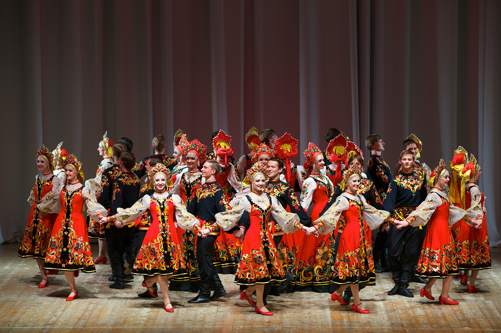
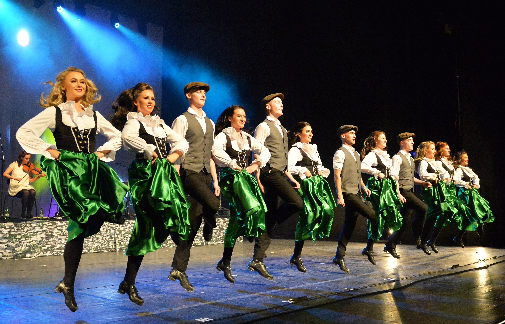
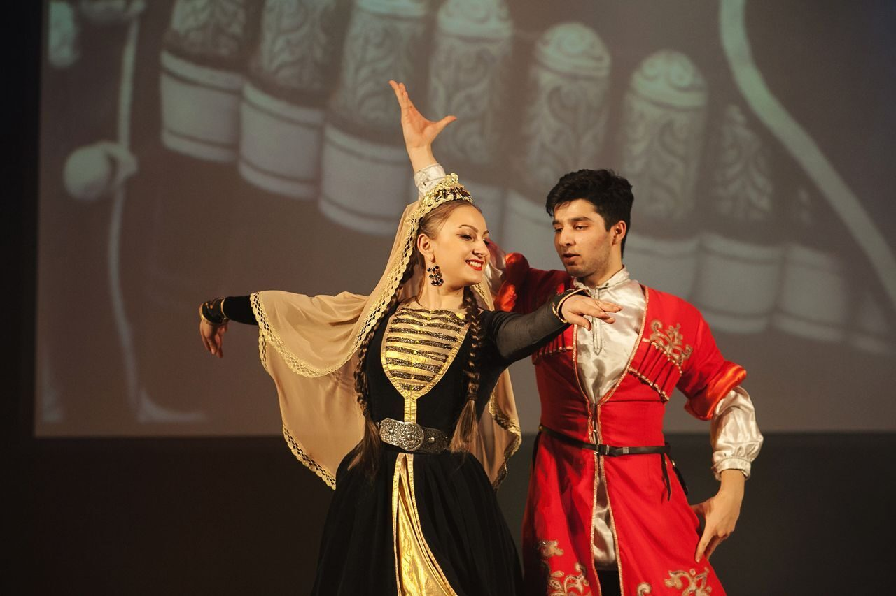
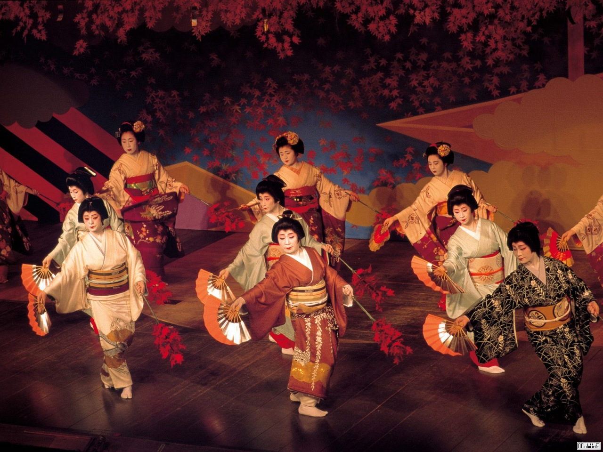

Народный танец — фольклорный танец, который исполняется в своей естественной среде и имеет определённые традиционные для данной местности движения, ритмы, костюмы и тому подобное. В первую очередь, он нужен самому танцору, проявляющему в момент танца характерные чувства, настроения, эмоции своей общины и только потом зрителю. Некоторые из народных танцев прославились на весь мир, другие же остались популярными только в пределах своей страны.
Список народный танцев неисчеслим, мы рассмотрем несколько колоритных, самобытных и ярких.
Русский танец

Русские танцы являются неотъемлемой частью русской национальной культуры.
Движения в некоторых танцах имитировали движения животных и птиц, в других — отражали трудовые процессы (посев, жатва, ткачество). Первоначальный танец, как и песня, выполнял магическую роль, поэтому в календарно-обрядовых танцах сохранилось много архаичных черт.
Связь русского народного танца с обрядами была характерна для многих хороводов и некоторых видов пляски. Одиночная пляска, перепляс и кадриль не были связаны с обрядами.
Русский народный танец в зависимости от местностях исполняется по-своему. На Севере — степенно, величаво. В Центральной части — то спокойно и лирично, то живо и весело. На Юге — задорно, с удалью. Вместе с тем существуют и общие черты русского народного танца, обусловленные в немалой степени национальным характером народа. Мужской танец отличают необыкновенная жизнерадостность, юмор, размах, уважительное отношение к партнерам. Для женского танца характерны плавность, задушевность, женственность, благородство, несмотря на то, что иногда он исполняется живо и задорно.
Ирландский танец
История танцев

Первые зафиксированные документально данные об ирландских танцах относятся к XI веку – в упоминаниях о крестьянских гуляниях. Но не исключено, что характерные элементы начали формироваться ещё во времена друидов, практиковавших круговые движения в религиозных ритуалах. Когда до острова добрались кельты, они привезли с собой свои национальные танцы, смешавшиеся с колоритными хороводами. Принятие и распространение христианства оказало огромное влияние на обычаи и культуру Ирландии, но народ ещё долгое время сохранял языческий дух своих музыкальных и танцевальных композиций.
Английская колонизация преследовала все проявления местных традиций, поэтому ирландские танцы больше чем на век ушли в подполье – им обучали втайне в далёких сёлах бродячие мастера. Так постепенно сформировались разные танцевальные школы, ведь каждый учитель предлагал свою технику. Стандартизация случилась только в XX веке в ходе мероприятий по возрождению и сохранению крупиц ирландской культуры – танцы заручились особой поддержкой Гэльской лиги.
До конца столетия они являлись чем-то вроде хобби с национальной окраской преимущественно для эмигрантов и их потомков. Поворотным моментом стал, как бы это странно ни звучало, международный конкурс «Евровидение». В 1994 году зажигательное шоу Riverdance в антракте с участием чемпионов по ирландским танцам впечатлило зрителей настолько, что уже на следующий день во всём мире стали интересоваться, где научиться таким экспрессивным движениям, похожим на чечётку или степ в воздухе.
Танцевальные костюмы и обувь
Самое важное в ирландском танце – это обувь. Используется два вида – мягкие тапочки на шнуровке и жёсткие ботинки. Знакомство с танцевальной культурой ирландцев начинается только в лёгких балетках без каблука, набойки требуются уже более опытным исполнителям для ритмичных ударов об пол. Тренируются в любой одежде, а на выступления обычно надевают костюмы. Женщины наряжаются в расшитые кельтскими узорами яркие платья с короткими и пышными юбками, чтобы были видны движения ног. Мужчинам предлагают неширокие штаны и рубашки с короткими рукавами.
Лезгинка

Лезгинка — народный танец лезгин, распространённый по всему Кавказу, а также музыкальное сопровождение к этому танцу. Традиционный народный танец горских народов Кавказа.Эталонной, классической считается лезгинка, характеризуемая музыкальным сопровождением в ритме 6/8, зажигательным и быстрым, энергичным темпом танца.
В танце используется различные образы, в основном движения воина в битве времен до огнестрельного оружия, каждое движение означает тот или иной элемент боя, например: раскинутые руки и периодичное сгибание в локте по переменно то одно то другой рукой означает стрельбу из лука. Мужчина двигается в образе «орла», чередует медленный и стремительный темп. Самыми трудно-исполняемыми и эффектными движениями являются танцевальные движения мужчины, когда он на носках раскидывает руки в разные стороны, (верхом исполнения является танец на согнутых пальцах ног) показывающее что танцующий может легко вести стрельбу из лука стоя на специально(или природной) сделанной тропинке не шире 30-35 сантиметра от стены скалы(на такой тропинке можно очень близко стоять и двигаться без подстраховки(стоять и двигаться нужно лицом к стене на носках на подогнутых пальцах, подогнутые пальцы создают «рычаг» и таким образом удерживают и возвращают в вертикальное положение, если тело отклонилось от стены) и вести стрельбу из лука стрелами в неприятеля а по самому стрелку попасть очень трудно) нависающей над ущельем, дорогой ведущей к поселению и т. д. Женщина двигается в образе «лебедя», завораживая грациозной осанкой и плавными движениями рук. Женщина увеличивает темп своего танца вслед за мужчиной.
Японский танец

Изначально танец для японца был особой молитвой. В наши дни есть два вида традиционного танца Японии – «одори» с более грубыми движениями, рассказывающими о простом быте, и «май» – ритуальный молитвенный танец с более мягкими и сдержанными движениями.
Японский народный танец – это целый театр, использующий многочисленные атрибуты: полотенца, зонты, мечи, веера, шляпы, маски и многое другое, всё, что используется в обычной, повседневной жизни. Японский веер, например, это символ счастья, поэтому применяется в японском танце довольно часто для выражения радости и удовлетворения жизнью. Зонт в руке танцора поможет ему рассказать о дожде. Шляпа бережёт лицо крестьянина от солнца, поэтому танцор в шляпе повествует о сельском хозяйстве. Меч, конечно же, – непременное оружие самурая. Одежда танцующего тоже наделена смыслом. Тот же самурай будет облачён в мешковатые штаны хакама, актёр изображающий весну наденет кимоно, разрисованное ветками цветущей сакуры.
Современная Япония обогатилась ещё одним танцем по имени «буто». Он не имеет ничего общего со сдержанностью религии дзен, танцоры полуобнажены, щедро загримированы и своими часто экспрессивными движениями рассказывают о пустоте души и поисках смысла бытия.